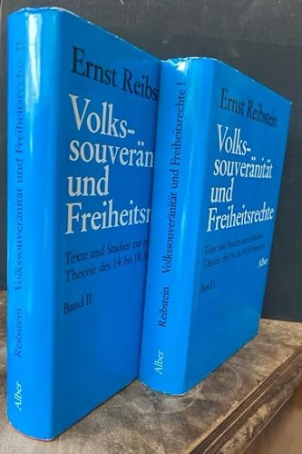
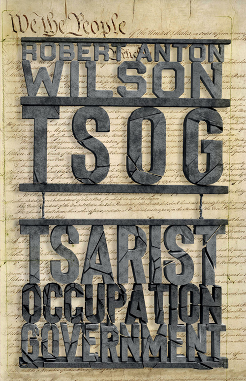
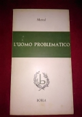
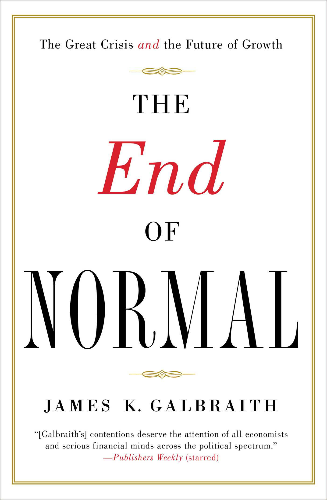

1:05:03 · 10 OPERE
La discesa verso il Pireo.
Il filo del discorso
Il relatore usa la discesa di Socrate al Pireo, all’inizio della Repubblica, come immagine del compito pubblico della cultura: uscire dalla protezione dello studio per misurarsi con la vita politica. Il primo caso è quello dei Pentagon Papers, che mette in relazione documenti riservati, responsabilità individuale e libertà della stampa. L’esempio di Daniel Ellsberg sostiene la domanda su quanto i cittadini possano conoscere delle decisioni prese in loro nome. Il rapporto storico resta però distinto dall’idea, non documentata, di un archivio segreto consegnato a ogni nuovo presidente. Aristotele e Montesquieu costituiscono il nucleo della discussione sui limiti del potere. Il relatore difende la durata dei libri contro l’idea che il sapere politico scada con il tempo. Dal libro V della Politica riprende il giuramento ostile al popolo: il contesto originale è una critica di quella ostilità e un invito a non fare torto ai governati. L’opera di Ernst Reibstein sulla sovranità popolare e sui diritti di libertà amplia il percorso alla storia delle idee dal XIV al XVIII secolo. Schweitzer offre un altro riferimento per interrogare la crisi della civiltà. La seconda parte passa ai linguaggi indiretti, alla satira e alla rinuncia al giudizio personale. Il libro indicato attraverso Robert Anton Wilson, il 2002 e la sigla T.S.O.G. è identificato probabilmente con TSOG, dedicato al Drug Tsar e al potere americano. Le analogie con il presente appartengono al relatore; il contesto originario non dimostra una previsione degli eventi del 2020. L’uomo problematico di Gabriel Marcel introduce l’inquietudine e la possibilità di contribuire alla propria subordinazione. The End of Normal di James K. Galbraith riceve invece una lettura polemica: la sua cornice economica dopo la crisi del 2008 va tenuta distinta dalle conclusioni politiche che il relatore ne trae. Il discorso contiene giudizi severi sui media e sui dirigenti contemporanei, da leggere come posizioni del relatore. Un controllo del testo ufficiale corregge il passaggio su von der Leyen: il discorso del settembre 2023 non attribuisce alla Russia il bombardamento di Hiroshima, ma accosta la memoria delle vittime alla condanna delle minacce nucleari russe contemporanee. Anche le accuse sui programmi sanitari, sulle città e sulle valute digitali non diventano fatti accertati attraverso il solo accostamento. La conclusione unisce Socrate, la responsabilità dei cittadini e una lettera di Jefferson del 1816. Il rischio di abituarsi a successive rinunce a un principio è ricondotto, nel testo originale, al debito pubblico e alla fiscalità; la stessa lettera considera le costituzioni rivedibili. Il filo complessivo è un invito a esaminare ragioni, fonti e conseguenze delle proprie scelte, senza trasformare né la tradizione culturale né il dissenso in una nuova autorità indiscutibile.
I libri nel discorso

La Repubblica
Copertina: Laterza · La Repubblica · edizione con testo a fronte di riferimento
Immagine associata all’ISBN di riferimento e controllata visivamente; edizione e traduzione non identificate come quelle citate o lette nel video.
Titolo e apertura del dialogo, discesa di Socrate al Pireo. La lettura come ingresso nella dimensione politica è del relatore; la scena iniziale è Repubblica I, 327a.
Passaggio 1:16 ↗ · Fonti e libro ↗
Pentagon Papers (Report of the Office of the Secretary of Defense Vietnam Task Force)
Prima pagina del fascicolo introduttivo e indice: Rapporto finale del 1969 · fascicolo introduttivo e indice · scansione NARA declassificata nel 2011
Prima pagina del fascicolo introduttivo e indice conservato dai National Archives; non è la copertina di un libro e non riproduce l’intero rapporto. La voce riguarda il corpus documentario.
Nome esplicito e ampia discussione dei documenti sulla politica statunitense in Vietnam. Il rapporto tratta il 1945–1967, fu commissionato nel 1967 e pubblicato dalla stampa dal giugno 1971; l’amministrazione Nixon interviene nella vicenda della pubblicazione, non nel periodo storico oggetto del rapporto.
Passaggio 1:54 ↗ · Fonti e libro ↗
Politica
Copertina: Bompiani · Testi a fronte, 2016 · a cura di Federico Ferri
Immagine autentica dell’opera, controllata visivamente; l’edizione di riferimento non è attribuita al filmato.
Titolo e libro V espliciti, con lettura del giuramento oligarchico più avanti. In V, 9 Aristotele critica l’ostilità al popolo e propone il contrario, non prescrive il giuramento come propria norma.
Passaggio 20:09 ↗ · Fonti e libro ↗
Lo spirito delle leggi
Copertina: BUR · 1989 · a cura di Robert Derathé · edizione in due volumi
Immagine ufficiale dell’edizione BUR in due volumi; non mostra l’intera coppia di esemplari e non identifica l’edizione del video.
Lo spirito delle leggi nominato nel confronto tra durata delle idee e attualità politica; ripreso più avanti a proposito della separazione dei poteri.
Passaggio 25:45 ↗ · Fonti e libro ↗
Volkssouveränität und Freiheitsrechte. Texte und Studien zur politischen Theorie des 14.–18. Jahrhunderts
Fotografia delle copertine dei due volumi: Karl Alber, 1972; fotografia dei due volumi
Fotografia autentica dei volumi I e II, conservati insieme nella medesima voce. Non è una terza raccolta né una copertina ricostruita. La specifica copia del filmato non è stata identificata.
Ernst Reibstein, titolo tedesco sovranità popolare e diritti di libertà, due volumi e pubblicazione nel 1972: identità riscontrata nel catalogo CiNii.
Passaggio 31:47 ↗ · Fonti e libro ↗
Filosofia della civiltà (The Philosophy of Civilization / Kulturphilosophie)
Copertina della raccolta completa The Philosophy of Civilization: Prometheus · The Philosophy of Civilization · 1987 · ISBN 9780879754037
La copertina rappresenta l’intera raccolta Prometheus, che comprende i due saggi. Non è la copertina della sola parte; non è la copertina Fazi e non identifica la specifica copia italiana citata. La raccolta è un contenitore editoriale, non una terza opera autonoma di Schweitzer distinta dai due testi.
Filosofia della civiltà è il titolo complessivo esplicitamente citato. La raccolta comprende due saggi, che il solo titolo complessivo non attesta come citazioni distinte.
Passaggio 37:04 ↗ · Fonti e libro ↗
TSOG: The Thing That Ate the Constitution and Other Everyday Monsters
Identificazione probabile
Copertina: Hilaritas Press, 2022; ristampa ampliata dell’opera del 2002
Copertina autentica Hilaritas Press 2022, distinta dall’edizione originaria del 2002 ricordata nel filmato. Il titolo viene identificato probabilmente da autore, acronimo, data e contenuto, senza dichiarare di aver riconosciuto visivamente la copia ripresa.
Libro indicato come del 2002 e attribuito a Robert Anton Wilson; i successivi passi nominano T.S.O.G. e il controllo della medicina. Titolo identificato probabilmente tramite la scheda Hilaritas Press; rettificata l’omonimia con il padre degli attori Wilson.
Passaggio 40:32 ↗ · Fonti e libro ↗
L’uomo problematico (L’homme problématique)
Fotografia della copertina: Borla, Torino 1964, collana Le idee e la vita; fotografia della copertina
Fotografia autentica, a risoluzione contenuta, di un esemplare Borla 1964: titolo e autore identificabili. L’edizione mostrata nel video non è identificata.
Gabriel Marcel, titolo L’uomo problematico e capitolo II sul problema dell’inquietudine: il relatore legge e commenta la figura dell’uomo che diventa carnefice di se stesso.
Passaggio 48:19 ↗ · Fonti e libro ↗
The End of Normal. The Great Crisis and the Future of Growth
Copertina: Simon & Schuster, paperback 2015; opera pubblicata nel 2014
Immagine autentica dell’opera; l’edizione illustrata non è attribuita al filmato.
James K. Galbraith e titolo The End of Normal espliciti; data iniziale sbagliata poi corretta dal relatore in 2014. Il giudizio negativo e l’estensione a un progetto politico contemporaneo sono sue interpretazioni.
Passaggio 49:10 ↗ · Fonti e libro ↗
Gorgia
Identificazione probabile
Copertina: Gorgia, Bompiani, giugno 2001, a cura di Giovanni Reale, testo greco a fronte, 384 pagine, ISBN 9788845291111. Copertina ufficiale blu, bianca e verde acqua con titolo e autore; edizione di riferimento non identificata nel video.
Immagine autentica dell’opera, controllata visivamente; l’edizione di riferimento non è attribuita al filmato.
Socrate: preferire subire ingiustizia al commetterla. Titolo non pronunciato; identificazione probabile dal passo di Gorgia 469b–c, coerente con il testo primario.
Passaggio 1:00:41 ↗ · Fonti e libro ↗